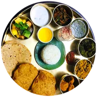
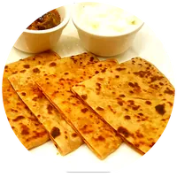
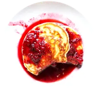
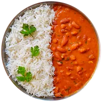
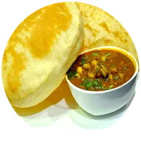
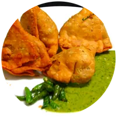
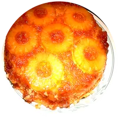
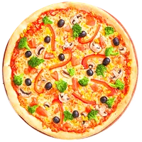
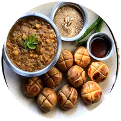

Every dish photo is a real photo shared under an open licence. We cut each plate out of its background, squared it, and adjusted colour and sharpness. Our edited versions are shared under the same licence as the original (CC BY-SA ones stay CC BY-SA).








